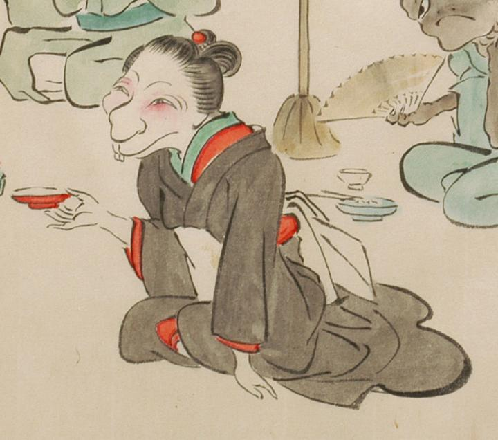

黒色の着物に白色の帯を締めた化物。結った髪に簪を挿し、両目は離れて横に長く、鼻が大きい。前歯が2本見え、鼠のような口元をしている。横座りして、右手に盃を持っている。
出典：親書誌：U426_nichibunken_0053：化物婚礼絵巻；バケモノコンレイエマキ／日付：2006／資源識別子：U426_nichibunken_0053_0021_0002
Copyright (c)2010- International Research Center for Japanese Studies, Kyoto, Japan. All rights reserved.